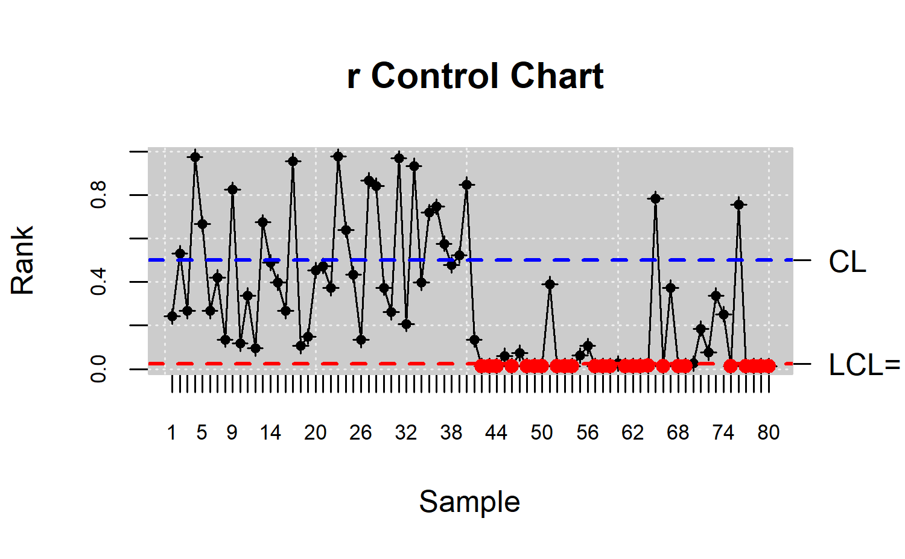
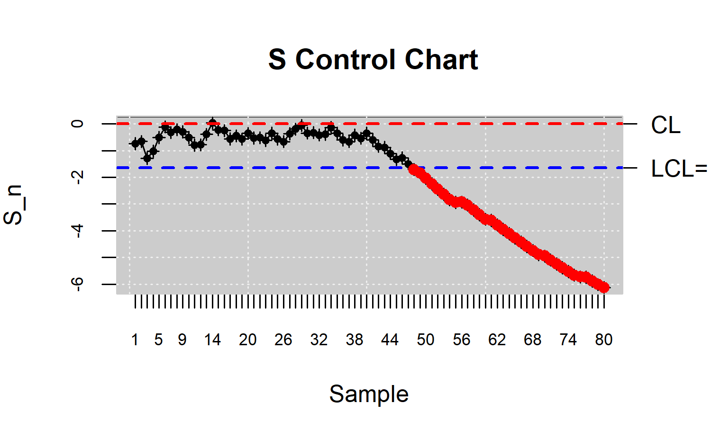

library(qcr)
#> Loading required package: qcc
#> Warning: package 'qcc' was built under R version 4.0.5
#> Package 'qcc' version 2.7
#> Type 'citation("qcc")' for citing this R package in publications.
#> Loading required package: fda.usc
#> Warning: package 'fda.usc' was built under R version 4.0.5
#> Loading required package: fda
#> Warning: package 'fda' was built under R version 4.0.5
#> Loading required package: splines
#> Loading required package: Matrix
#> Loading required package: fds
#> Warning: package 'fds' was built under R version 4.0.5
#> Loading required package: rainbow
#> Warning: package 'rainbow' was built under R version 4.0.5
#> Loading required package: MASS
#> Loading required package: pcaPP
#> Warning: package 'pcaPP' was built under R version 4.0.5
#> Loading required package: RCurl
#>
#> Attaching package: 'fda'
#> The following object is masked from 'package:graphics':
#>
#> matplot
#> Loading required package: mgcv
#> Loading required package: nlme
#> This is mgcv 1.8-31. For overview type 'help("mgcv-package")'.
#> ----------------------------------------------------------------------------------
#> Functional Data Analysis and Utilities for Statistical Computing
#> fda.usc version 2.0.2 (built on 2020-02-17) is now loaded
#> fda.usc is running sequentially usign foreach package
#> Please, execute ops.fda.usc() once to run in local parallel mode
#> Deprecated functions: min.basis, min.np, anova.hetero, anova.onefactor, anova.RPm
#> New functions: optim.basis, optim.np, fanova.hetero, fanova.onefactor, fanova.RPm
#> ----------------------------------------------------------------------------------
#> Loading required package: mvtnorm
#> Warning: package 'mvtnorm' was built under R version 4.0.5
#>
#> Package qcr: Quality Control Review
#> version 1.3 (built on 2021-05-14).
#> Copyright Miguel A. Flores Sanchez 2016-2021.Gráficos de control de la calidad no paramétricos
Los gráficos de control que se presenta en esta sección son propuestas por Regina Liu (Liu, 1995). La idea principal bajo sus gráficos de control es reducir cada medida multivariante a un índice univariado, o mejor dicho a su ordenamiento relativo del centro hacia afuera inducido por profundidad de datos. Este planteo es completamente no paramétrico, y así las cartas resultantes son válidas sin suposiciones paramétricas en el modelo del proceso. Estos gráficos permiten detectar simultáneamente el cambio en localización (desplazamiento de la media) y el incremento de escala (cambio en variabilidad) en un proceso.
Liu desarrolló los gráficos de control r, Q y S los cuales pueden ser vistos como generalizaciones multivariadas basadas en profundidad de datos de los gráficos univariadas X, \(\bar{x}\) y Cusum respectivamente.
Profundidad de datos
En el análisis multivariante, el término profundidad se refiere al grado de centralidad de un punto con respecto a una nube de puntos o una distribución de probabilidad. Por tanto, es posible definir un orden en el espacio euclídeo multidimensional a través de la profunidad de un dato.
Según Dyckerhoff ,(Dyckerhoff, 2004) y expuestas por Cascos (Cascos, 2011) la definición de la función de profundidad es:
Si se fija una distribución \(P\) en \(R^{d}\), una función de profundidad es una función acotada \(D_{p}:R^{d} \longrightarrow R\) que asigna a cada punto de \(R^{d}\) su grado de centralidad respecto de P.
Las funciones de profundidad con las que se pueden realizar los gráficos de control son:
- Profundidad Simplicial (Liu, 1990)
- Profundidad de Mahalanobis (Mahalanobis 1936)
- Profundidad Semiespacial (Half-Space) o de Tukey (Hodges, 1955, Tukey, 1975)
- Profundidad de Verosimilitud (Likelihood Depth), (Fraiman y Meloche, 1996), (Liu, 1999)
- Profundidad de las Proyecciones (Random Projection Depth) (Zuo y Serfling, 2000)
Para el cálculo de las profundidades se utiliza el paquete fda.qcr.
Estadísticos derivados de la profundidad de datos
Sea \(G\) la distribución \(k-\)dimensional y \(Y_1,Y_2,\ldots,Y_m\); m observaciones aleatorias de \(G\). La mencionada muestra es una muestra de referencia en el contexto de control de calidad y se considera como medidas de los productos producidos en un proceso bajo control. Sean \(X_1,X_2,\ldots,X_n\) las nuevas observaciones provenientes del proceso de manufactura, se asume que siguen una distribución \(F\), si la calidad del producto se ha deteriorado o si el proceso está fuera de control, caso contrario siguen una distribución \(G\).
Si se ordenan todas las profundidades \(D_{G}\left(Y_{i}\right)\) en orden ascendente y se usa \(Y_{\left[ j\right] }\) para denominar al punto de la muestra asociado con el \(j-\)ésimo valor de profundidad más pequeño, entonces \(Y_{\left[ 1\right]},\ldots,Y_{\left[ m\right]}\) siendo \(Y_{\left[ m\right]}\) el punto más central. Mientras más pequeño el índice (o rango) de un punto, más externo será ese punto respecto de la distribución subyacente \(G\left( .\right)\).
Liu (Liu, 1995) define el rango (Rank):
\(r_{G}\left( y\right)= P\left\lbrace D_{G}\left( Y\right) \leq D_{G}\left( y\right) \mid Y\sim G \right\rbrace\)
\(Y\sim G\) indica que la variable aleatoria \(Y\) sigue la distribución \(G\).
Para el caso en que \(G\) es desconocida y sólo se conoce la muestra \(\left\lbrace Y_{1},\ldots,Y_{m} \right\rbrace\):
\(r_{G_{m}}\left( y\right)= \frac{ \sharp \left\lbrace D_{G_{m}}\left( Y_j\right) \leq D_{G_{m}}\left( y\right), j = 1,\ldots,m \right\rbrace}{m}\)
Si \(F_{n}\left( .\right)\) representa la distribución empírica de la muestra \(X_1,X_2, ...,X_n\) entonces en el mismo trabajo, Liu define, (Liu, 1995). índice \(Q\):
\(Q\left( G,F\right)= P\left\lbrace D_{G}\left( Y\right) \leq D_{G}\left( X\right) \mid Y\sim G, X\sim F \right\rbrace=E_{F}\left[ r_{G}\left( X\right) \right]\)
\(Q\left( G,F_{n}\right)= \frac{1}{n} \sum _{i=1}^{n} r_{G}\left( X_i\right)\)
\(Q\left( G_{m},F_{n}\right)= \frac{1}{n} \sum _{i=1}^{n} r_{G_{m}}\left( X_i\right)\)
Gráfico de control r
Se calcula \(\left\lbrace r_{G}\left( X_1\right),r_{G}\left( X_2\right),\ldots,r_{G}\left( X_n\right)\right\rbrace\) ó \(\left\lbrace r_{G_{m}}\left( X_1\right),r_{G_{m}}\left( X_2\right),\ldots,r_{G_{m}}\left( X_n\right)\right\rbrace\) si sólo está disponible \(Y_1,\ldots,Y_m\) pero no \(G\).
El gráfico de control r, consiste en graficar el estadístico rank versus el tiempo. Cuyo límite de control central \(LC = 0.5\) y límite inferior es \(LCI = \alpha\), donde \(\alpha\) es la tasa de falsa alarma. El proceso es declarado fuera de control si al menos uno de los estadísticos rank cae bajo \(LCI\). Un valor pequeño del estadístico rank \(r_{G_{m}}\left( X\right)\) significa que sólo una muy pequeña proporción de \(Y_i~^{'}\) son más externos que \(X\). Entonces, si se asume que \(X \sim F\) entonces un valor pequeño de \(r_{G_{m}}\left( X\right)\) sugiere una posible desviación desde \(G\) a \(F\). Esta puede ser por un desplazamiento en la localización y/o un incremento en escala de la variable de calidad.
Aunque el gráfico r no dispone de la línea UCL para hacer de CL la línea central de la región bajo control, la línea CL sirve como punto de referencia que permite observar si aparece o se está gestando un patrón o tendencia en una secuencia de muestras. Sí \(r_{G_{m}}\left( X\right)\) es mayor que \(0.5\); hay indicios de una disminución en escala con quizás un despreciable desplazamiento de localización. Esto es visto como una mejora en calidad dada una ganancia en la precisión, y así el proceso no se vería como fuera de control.
set.seed(356)
mu<-c(0,0)
Sigma<- matrix(c(1,0,0,1),nrow = 2,ncol = 2)
u <- c(2,2)
S <- matrix(c(4,0,0,4),nrow = 2,ncol = 2)
G <- rmvnorm(540, mean = mu, sigma = Sigma)
x<- rmvnorm(40,mean=u,sigma = S)
x <- rbind(G[501:540,],x)
M <- G[1:500,]
data.npqcd <- npqcd(x,M)
str(data.npqcd)
#> List of 2
#> $ x: num [1:80, 1:2, 1] 0.995 -1.274 -1.174 -0.347 0.931 ...
#> $ G: num [1:500, 1:2] 0.306 -0.322 1.389 1.438 -0.784 ...
#> - attr(*, "data.name")= chr "DATA"
#> - attr(*, "type.data")= chr "Multivariate"
#> - attr(*, "class")= chr [1:2] "npqcd" "list"
res.npqcs <- npqcs.r(data.npqcd,method = "Liu", alpha=0.025)
str(res.npqcs)
#> List of 9
#> $ npqcd :List of 2
#> ..$ x: num [1:80, 1:2, 1] 0.995 -1.274 -1.174 -0.347 0.931 ...
#> ..$ G: num [1:500, 1:2] 0.306 -0.322 1.389 1.438 -0.784 ...
#> ..- attr(*, "data.name")= chr "DATA"
#> ..- attr(*, "type.data")= chr "Multivariate"
#> ..- attr(*, "class")= chr [1:2] "npqcd" "list"
#> $ type : chr "r"
#> $ depth.data: num [1:80, 1] 0.0243 0.0866 0.0292 0.2412 0.1214 ...
#> $ statistics: num [1:80, 1] 0.242 0.532 0.268 0.974 0.666 0.268 0.42 0.136 0.824 0.118 ...
#> $ alpha : num 0.025
#> $ limits : Named num [1:2] 0.025 0.5
#> ..- attr(*, "names")= chr [1:2] "lcl" "cl"
#> $ data.name : chr "DATA"
#> $ method : chr "Liu"
#> $ violations: int [1:25] 42 43 44 46 48 49 50 52 53 54 ...
#> - attr(*, "class")= chr [1:2] "npqcs.r" "npqcs"
summary(res.npqcs)
#>
#> Summary of group statistics:
#> V1
#> Min. :0.0140
#> 1st Qu.:0.0140
#> Median :0.1970
#> Mean :0.3018
#> 3rd Qu.:0.4810
#> Max. :0.9760
#>
#> Number of quality characteristics: 2
#> Number of samples or observations: 80
#> Number of observations or sample size: 1
#> Control limits:
#> lcl cl
#> 0.025 0.500
#>
#> Beyond limits of control:
#> [1] 0.014 0.014 0.014 0.014 0.014 0.014 0.014 0.014 0.014 0.014 0.014 0.014
#> [13] 0.014 0.014 0.014 0.014 0.016 0.014 0.014 0.014 0.014 0.014 0.014 0.014
#> [25] 0.014
plot(res.npqcs,title =" r Control Chart")
Gráfico de control Q
La idea detrás del gráfico Q es similar a la del gráfico \(\bar{X}\). Si \(X_1,X_2,\ldots\) son univariadas y \(G\) es normal, el gráfico \(\bar{X}\) dibuja los promedios de subconjuntos consecutivos de tamaño. Una característica de este gráfico, es que puede prevenir una falsa alarma cuando el proceso en realidad está en control pero algún punto de la muestra individual cayó fuera de los límites de control debido sólo a fluctuaciones aleatorias. Esta es una ventaja del gráfico \(\bar{X}\) sobre el gráfico \(X\).
Para el caso del gráfico Q, se dibuja los promedios de subconjuntos consecutivos de tama~o n, del estadístico rank (\(r_{G}\left( X_i\right)\) ó \(r_{G_{m}}\left( X_i\right)\)) que se denota por \(Q\left( G,F_{n}^j\right)\) ó \(Q\left( G_{m},F_{n}^j\right)\), aquí \(F_n^j\) es la distribución empírica de los \(X_i\).
El gráfico Q dibuja los siguientes conjuntos de puntos: \(\left\lbrace Q\left( G_{m},F_{n}^j\right),Q\left( G_{m},F_{n}^j\right),.\ldots\right\rbrace\), si sólo se dispone de \(\left\lbrace Y_1, Y_2,\ldots, Y_m \right\rbrace\).
Los límites de control son los siguientes:
\(n \geq 5\)
\(CL = 0.5; LCL = 0.5-Z_{\alpha}\left( 12n\right)^{\frac{1}{2}} \quad para \quad dibujar \quad Q\left( G,F_{n}^j\right)\)
\(CL = 0.5; LCL = 0.5-Z_{\alpha}\sqrt{\frac{1}{12•}\left(\frac{1}{m}+\frac{1}{n}\right) } \quad para \quad dibujar \quad Q\left( G_m,F_{n}^j\right)\)
\(n < 5\)
\(CL = 0.5; LCL = \frac{\left( n!\alpha\right)^{\frac{1}{n}}}{n}\)
set.seed(12345)
mu<-c(0,0)
Sigma<- matrix(c(1,0,0,1),nrow = 2,ncol = 2)
u <- c(2,2)
S <- matrix(c(4,0,0,4),nrow = 2,ncol = 2)
G <- rmvnorm(540, mean = mu, sigma = Sigma)
x<- rmvnorm(40,mean=u,sigma = S)
x <- rbind(G[501:540,],x)
n <- 4 # samples
m <- 20 # measurements
k <- 2 # number of variables
x.a <- array(,dim=c(n,k,m))
for (i in 1:m){
x.a[,,i] <- x[(1+(i-1)*n):(i*n),] }
M <- G[1:500,]
data.npqcd <- npqcd(x.a,M)
str(data.npqcd)
#> List of 2
#> $ x: num [1:4, 1:2, 1:20] 1.6775 -0.8564 -0.3809 -0.0718 0.0795 ...
#> $ G: num [1:500, 1:2] 0.586 -0.109 0.606 0.63 -0.284 ...
#> - attr(*, "data.name")= chr "DATA"
#> - attr(*, "type.data")= chr "Multivariate"
#> - attr(*, "class")= chr [1:2] "npqcd" "list"
res.npqcs <- npqcs.Q(data.npqcd,method = "Liu", alpha=0.025)
str(res.npqcs)
#> List of 8
#> $ npqcd :List of 2
#> ..$ x: num [1:4, 1:2, 1:20] 1.6775 -0.8564 -0.3809 -0.0718 0.0795 ...
#> ..$ G: num [1:500, 1:2] 0.586 -0.109 0.606 0.63 -0.284 ...
#> ..- attr(*, "data.name")= chr "DATA"
#> ..- attr(*, "type.data")= chr "Multivariate"
#> ..- attr(*, "class")= chr [1:2] "npqcd" "list"
#> $ type : chr "Q"
#> $ statistics: num [1:20] 0.352 0.604 0.346 0.623 0.456 ...
#> $ alpha : num 0.025
#> $ limits : Named num [1:2] 0.22 0.5
#> ..- attr(*, "names")= chr [1:2] "lcl" "cl"
#> $ data.name : chr "DATA"
#> $ method : chr "Liu"
#> $ violations: int [1:10] 11 12 13 14 15 16 17 18 19 20
#> - attr(*, "class")= chr [1:2] "npqcs.Q" "npqcs"
summary(res.npqcs)
#>
#> Summary of group statistics:
#> Min. 1st Qu. Median Mean 3rd Qu. Max.
#> 0.01400 0.08637 0.25725 0.28715 0.46450 0.62350
#>
#> Number of quality characteristics: 2
#> Number of samples or observations: 4
#> Number of observations or sample size: 20
#> Control limits:
#> lcl cl
#> 0.2200279 0.5000000
#>
#> Beyond limits of control:
#> [1] 0.1135 0.1580 0.0590 0.1680 0.0565 0.0900 0.0140 0.0755 0.0640 0.1115
plot(res.npqcs,title =" Q Control Chart")
Gráfico de control S
El gráfico de control S se inspira en el gráfico de control univariado CUSUM. Esta dibuja \(\sum_{i=1}^{n}\left( X - \mu \right)\) lo cual refleja el patrón de la desviación total del valor esperado. Este gráfico de control es más efectivo que los gráficos \(X\) o \(\bar{X}\) en detectar pequeños cambios del proceso.
En el gráfico de control S se dibujan los puntos correspondientes a las expresiones siguientes:
En el caso de contar con \(G\):
\(S_n\left( G\right) = \sum_{i=1}^{n}\left( r_G\left( X_i\right) - \frac{1}{2} \right)\)
Los límites de control son los siguientes:
\(CL = 0; LCL = -Z_{\alpha}\left(\frac{n}{12}\right)^{\frac{1}{2}}\)
En el caso de contar con \(Y_1,\ldots,Y_m\):
\(S_n\left( G_m\right) = \sum_{i=1}^{n}\left( r_{G_{m}}\left( X_i\right) - \frac{1}{2} \right)\)
Los Límites de Control son los siguientes:
\(CL = 0; LCL = -Z_{\alpha}\sqrt{n^2\frac{\left(\frac{1}{m}+\frac{1}{n}\right)}{12}}\)
Los límites de control LCL en ambos casos constituyen una curva en vez de una recta; si n es grande el gráfico de control S fácilmente excedería el tamaño del papel, por lo que se estandariza de la siguiente manera respectivamente:
\(S_n^{*}\left( G\right) = \frac{S_n^{*}\left(G\right)}{\sqrt{\frac{n}{12}}}\)
\(S_n^{*}\left( G_m\right) = \frac{S_n\left(G_m\right)}{\sqrt{n^2\frac{\left(\frac{1}{m}+\frac{1}{n}\right)}{12}}}\)
Los límites de control en los dos casos son los siguientes:
\(CL = 0; LCL = -Z_{\alpha}\)
set.seed(12345)
mu<-c(0,0)
Sigma<- matrix(c(1,0,0,1),nrow = 2,ncol = 2)
u <- c(2,2)
S <- matrix(c(4,0,0,4),nrow = 2,ncol = 2)
G <- rmvnorm(540, mean = mu, sigma = Sigma)
x<- rmvnorm(40,mean=u,sigma = S)
x.a <- rbind(G[501:540,],x)
M <- G[1:500,]
data.npqcd <- npqcd(x.a,M)
str(data.npqcd)
#> List of 2
#> $ x: num [1:80, 1:2, 1] 1.6775 -0.8564 -0.3809 -0.0718 0.6707 ...
#> $ G: num [1:500, 1:2] 0.586 -0.109 0.606 0.63 -0.284 ...
#> - attr(*, "data.name")= chr "DATA"
#> - attr(*, "type.data")= chr "Multivariate"
#> - attr(*, "class")= chr [1:2] "npqcd" "list"
res.npqcs <- npqcs.S(data.npqcd,method = "Liu", alpha=0.05)
str(res.npqcs)
#> List of 8
#> $ npqcd :List of 2
#> ..$ x: num [1:80, 1:2, 1] 1.6775 -0.8564 -0.3809 -0.0718 0.6707 ...
#> ..$ G: num [1:500, 1:2] 0.586 -0.109 0.606 0.63 -0.284 ...
#> ..- attr(*, "data.name")= chr "DATA"
#> ..- attr(*, "type.data")= chr "Multivariate"
#> ..- attr(*, "class")= chr [1:2] "npqcd" "list"
#> $ type : chr "S"
#> $ statistics: num [1:80] -0.741 -0.66 -1.292 -1.025 -0.515 ...
#> $ alpha : num 0.05
#> $ limits : Named num [1:2] 0 -1.64
#> ..- attr(*, "names")= chr [1:2] "cl" "lcl"
#> $ data.name : chr "DATA"
#> $ method : chr "Liu"
#> $ violations: int [1:33] 48 49 50 51 52 53 54 55 56 57 ...
#> - attr(*, "class")= chr [1:2] "npqcs.S" "npqcs"
summary(res.npqcs)
#>
#> Summary of group statistics:
#> Min. 1st Qu. Median Mean 3rd Qu. Max.
#> -6.12323 -3.58085 -0.85896 -2.00763 -0.42436 0.03105
#>
#> Number of quality characteristics: 2
#> Number of samples or observations: 80
#> Number of observations or sample size: 1
#> Control limits:
#> cl lcl
#> 0.000000 -1.644854
#>
#> Beyond limits of control:
#> [1] -1.710765 -1.836190 -2.043093 -2.245696 -2.444181 -2.638716 -2.829460
#> [8] -2.937644 -2.929749 -3.040439 -3.220669 -3.397692 -3.569932 -3.613600
#> [15] -3.782822 -3.949234 -4.112929 -4.273995 -4.432519 -4.588579 -4.742254
#> [22] -4.893616 -4.947340 -5.095040 -5.240611 -5.384115 -5.525610 -5.665153
#> [29] -5.728754 -5.743827 -5.879246 -6.012889 -6.123226
plot(res.npqcs,title =" S Control Chart")